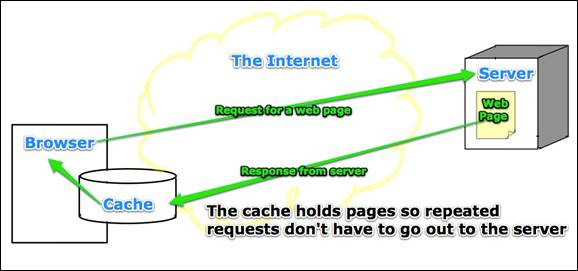

Closing Your Cache
Cache (pronounced "cash") is a holding area in the computer's memory. The browser displays the web page located in cache instead of going back out to the web server that takes more time.

For a developer this is not a good thing because the browser will keep looking at the old version of a page in the cache instead of going to the file system and getting the most recent copy with your changes.To fix this problem set the cache to zero on all the browsers you use.
In FireFox Tools/Options/Advanced/Network tab
Use up to 0 MB of space for the cache.
Click on the "Clear Now" button to empty the current cache.
Short cut to clear the cache: Tools/Clear Recent History/Details uncheck everything except "Cache"
In Internet Explorer (IE) - Tools/Internet Options/General Tab
In the "Browsing history" area click on the "Settings" button
Select the option: "Every time I visit the webpage"
Set the "Disk space to use" to 8.